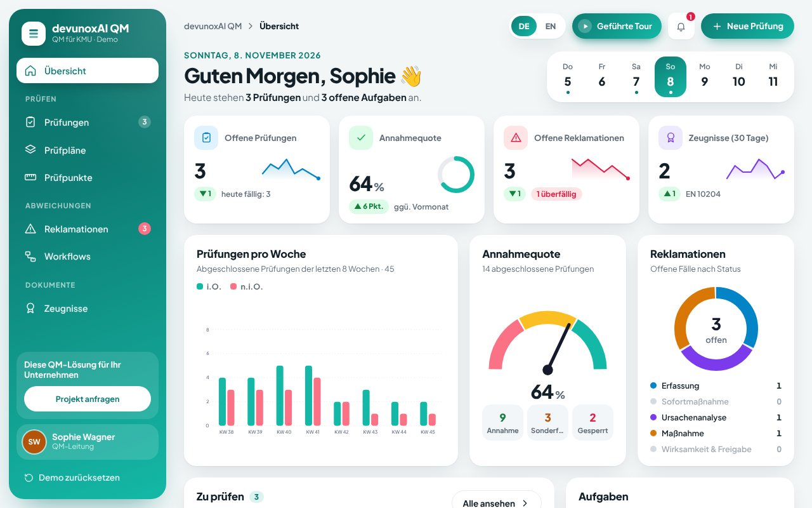
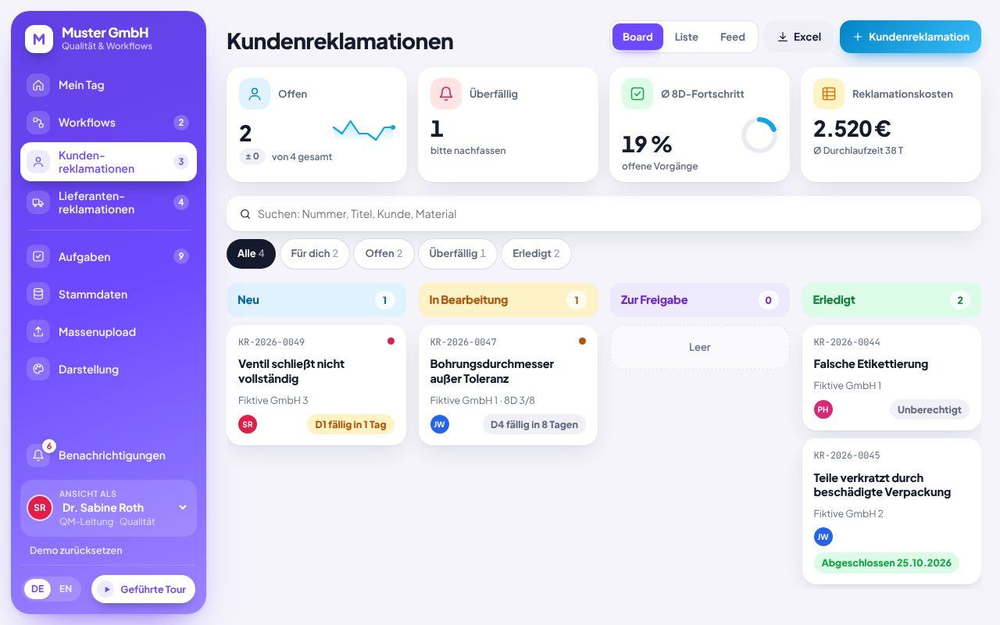
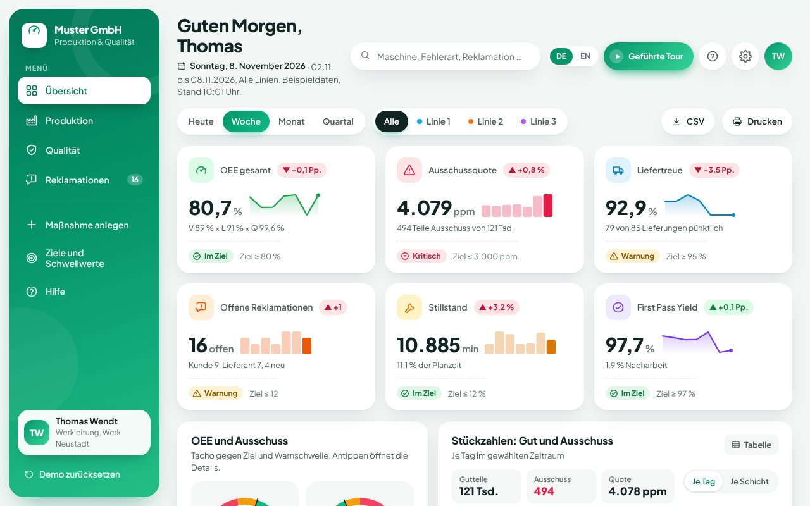

Qualitätsmanagement
KI im Qualitätsmanagement: Reklamationen, Prüfungen und Kennzahlen im Griff
Wir bauen QM-Software und KI-Automatisierungen für den Mittelstand: Reklamationen nach 8D, Prüfpläne mit Prüfung am Handy und Qualitäts-Dashboards. Eigenständig oder angebunden an SAP QM, Ihr CAQ-System oder Excel.
„Bei Lieferung 4471 sind 12 Gehäuse gerissen, Fotos anbei.“
Material GH-200 · Charge 26-118 · Fehlerbild Riss
2 frühere Reklamationen mit gleichem Fehlerbild
D1 Team und D2 Problembeschreibung zur Freigabe bei QM
Sekunden statt Abtippen und Suchen
Typische Aufgaben
Was wir im Qualitätsmanagement automatisieren
Reklamationen automatisch erfassen
Die KI liest E-Mails, PDFs und Fotos und legt die Reklamation mit Kunde, Material, Charge und Fehlerbild an.
8D-Berichte vorbereiten
Entwürfe für Problembeschreibung, Sofortmaßnahmen und Ursachenanalyse aus Ihren Daten. QM prüft und gibt frei.
Ähnliche Fälle und Maßnahmen finden
Die KI durchsucht frühere Reklamationen und zeigt, was bei gleichem Fehlerbild schon geholfen hat.
Prüfpläne und Prüfungen am Handy
Prüfpläne per Drag & Drop, Messwerte mit Toleranzen, Fotos und Dokumente direkt an der Linie oder im Wareneingang.
Lieferantenreklamationen und Bewertung
Mängel an Zukaufteilen mit Fristen, Kosten und Eskalation klären und Lieferanten nach Kennzahlen bewerten.
Prüfzeugnisse erstellen
Abnahmeprüfzeugnisse nach DIN EN 10204 entstehen direkt aus den Prüfergebnissen, ohne Abschreiben.
Anbindung
Mit SAP QM, CAQ oder ganz ohne
Wir arbeiten mit dem, was in Ihrem Unternehmen schon da ist. Der Gründer von devunoxAI ist seit 2017 als SAP-QM-Berater in Industrieprojekten tätig und kennt Qualitätsprozesse aus der Praxis.
SAP QM
Qualitätsmeldungen, Prüfergebnisse und Stammdaten per Schnittstelle nutzen, ohne Ihr SAP umzubauen.
CAQ-Systeme
Vorhandene CAQ-Software bleibt. Wir ergänzen fehlende Abläufe, KI-Auswertungen oder ein mobiles Frontend.
Excel und E-Mail
Für Unternehmen ohne QM-System: Reklamationen, Prüfungen und Kennzahlen aus Excel-Listen und Postfach in einer App.
Demos zum Ausprobieren
QM-Software im Einsatz
Drei Beispiele mit Beispieldaten, direkt im Browser und ohne Anmeldung.

QM-App: Qualitätsmanagement für KMU
Prüfpläne per Drag & Drop bauen und am Handy prüfen. Abweichungen werden mit einem Klick zur Reklamation mit Workflow, Zeugnisse nach DIN EN 10204 entstehen direkt aus den Ergebnissen.
Demo öffnen
Kundenreklamationen (8D)
Reklamationen von Kunden strukturiert nach 8D, mit Rollen, Fristen, Kosten und Eskalation bis zum fertigen 8D-Bericht. Lieferantenreklamationen in derselben App.
Demo öffnen
Produktions- und Qualitäts-Cockpit
OEE, Ausschuss in ppm, First Pass Yield und Reklamationen mit 8D-Status. Nach Zeitraum, Linie und Maschine filterbar, mit Zielwerten und Ampeln.
Demo öffnenAblauf
Vom Gespräch zur fertigen Lösung
Sie sehen früh ein Ergebnis und entscheiden Schritt für Schritt, wie es weitergeht.
- 130 Minuten · kostenlos
Erstgespräch
Wir klären, welche Aufgabe am meisten Zeit kostet und was eine Lösung bringen würde.
- 2ca. 1 Woche
Prototyp
Ein klickbarer Entwurf unter einer eigenen Vorschau-Adresse. Sie testen ihn mit echten Beispielen.
- 32 bis 6 Wochen
Umsetzung
Ausbau, Tests und Anbindung an Ihre Systeme wie Postfach, Kalender oder Buchhaltung.
- 4laufend
Betrieb
Hosting, Updates und Weiterentwicklung übernehmen wir auf Wunsch zum monatlichen Fixpreis.
Häufige Fragen
Antworten vorab
Brauchen wir SAP oder ein CAQ-System?
Nein. Die Lösung läuft eigenständig im Browser und auf dem Handy. Wenn SAP QM oder ein CAQ-System vorhanden ist, binden wir es an.
Ersetzt die KI unsere Qualitätssicherung?
Nein. Die KI erfasst, sortiert und bereitet vor, zum Beispiel einen 8D-Entwurf. Entscheidungen und Freigaben bleiben bei Ihrem QM-Team.
Hilft das bei ISO 9001 oder IATF 16949?
Die Software unterstützt dokumentierte Abläufe, Fristen und Nachvollziehbarkeit, wie sie diese Normen verlangen. Die Zertifizierung selbst bleibt Sache Ihres Unternehmens und Ihres Auditors.
Was kostet eine QM-Lösung?
Nach dem Erstgespräch erhalten Sie einen Festpreis. Ein erster klickbarer Prototyp steht in der Regel nach etwa einer Woche.
Wo liegen unsere Daten?
Wir hosten in Rechenzentren innerhalb der EU und arbeiten DSGVO-konform mit Vertrag zur Auftragsverarbeitung. Ihre Daten werden nicht zum Training von KI-Modellen verwendet.
Erzählen Sie uns, was Sie Zeit kostet
Im kostenlosen Erstgespräch finden wir heraus, wo sich Automatisierung oder eigene Software für Sie lohnt. Den Piloten bauen wir kostenlos.
Kostenlosen Pilot anfragen